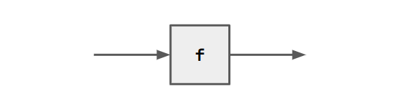
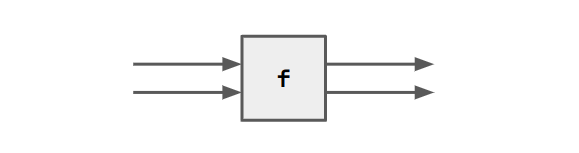
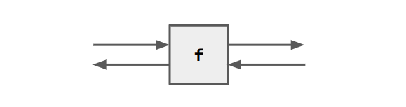
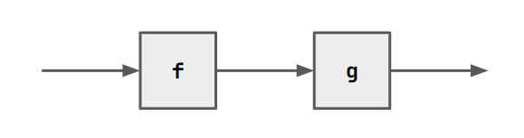
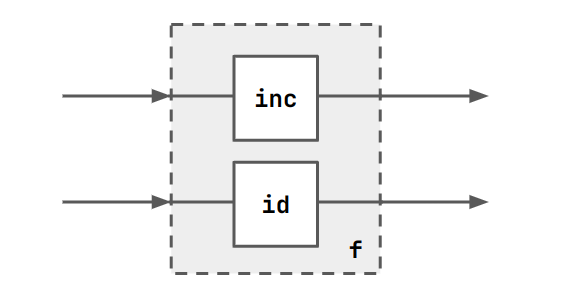
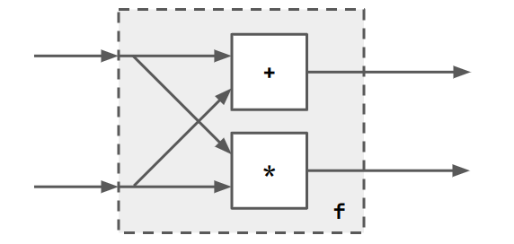
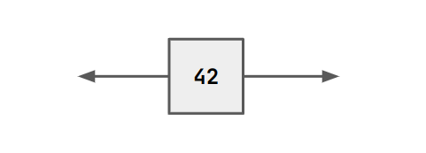
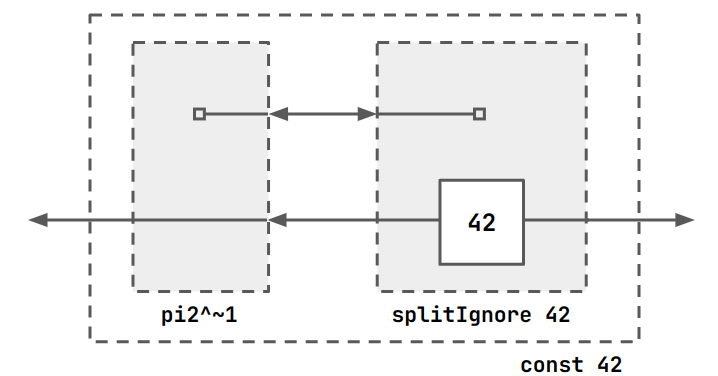

Oli's Little Guide to Ruby HDL
March 2, 2025
Oli's Little Guide to Ruby
This is about the 1986 HDL Ruby, made by Mary Sheeran. It's not quite finished, but I think provides a nice swift introduction to many of the basic concepts (everything up until registers). If you are interested in contributing, please do!
Basic Relations
Ruby defines blocks with a domain and range.
Domain variables are read bottom-to-top, left-to-right and are on the left or top of the block.
Range variables are read left-to-right, bottom-to-top and are on the bottom or right of the block.
Blocks might perform computation.

In ruby we can describe this as follows:
f = VAR a . a $rel a.
If f performs a function g on its input, we can write:
f = VAR a . a $rel (`g` a).
f can be used as a function. For example, it is valid to declare a
new block e == f == g:
e = VAR a . a $rel (`f` a).
If we have multiple range/domain variables.

f = VAR a b . <a, b> $rel <a, b>.
Or, with computation:
f = VAR a b . <a, b> $rel <(`inc` a), (`inc` b)>.
Tuples/lists are defined with angle brackets.
The left/right sides of $rel can be either inputs or outputs.
f = VAR a b . <(`inc` a), b> $rel <a, (`inc` b)>.

With VAR we declare the inputs, in this case a and b.
Running things
This is dependent on your compiler. You will pass your .rby file into
a compiler and execute it with another program and some inputs. These
are passed to the current block in your program. For me this looks
like:
rc mycode.rby && re "a b"
You can pass symbols for symbolic execution, or concrete values.
One input, lots of input wires
$wire is a shorthand for $rel without explicit inputs.
Consider
id = a $wire a.
Obviously, id 5 is just 5. But what about id <5, 5>?
This is <5, 5>. Consider a more useful example.
fork = a $wire <a, a>.
fork a is <a, a>, and fork <a, a> is
<<a, a>, <a, a>>.
Defining Blocks Without $rel
We can sequence (compose) blocks with ;. E.g. f ; g.

You can do this lots of times with the same block by raising it to the
power of n. E.g. f^3 is f ; f ; f.
We can define blocks in parallel with []. E.g. f = [id, inc].

A more complex example might be the following

The 4-input part after the forking is clearly
<<a, b>, <a, b>> ; [mult, add]
<<a, b>, <a, b>> is equivalent to fork <a, b>. Thus the entire
block is representable as
f = fork ; [mult, add].
Here's another example
add3 = [id, add] ; add.
$rel vs block composition
Think of $rel as a lambda (anonymous) function, but for relations.
You can use a lambda everywhere where you can use a named function.
f = [VAR x. x $rel x, add].
You can also give a lambda a name, just as we have been doing all along, and then refer to it in other parts of the code.
id = VAR x. x $rel x.
f = [id, add].
In fact, you can give new names to existing named functions (i.e. function aliasing):
f = [id, add].
g = f.
How can we write f using $rel notation? Let's try to draw it, and
use $rel to define the behaviour of the resulting block.

We can see that f takes 3 inputs, adds the latter two (remember we count from
the bottom up), and produces two outputs. So we can encode that directly as
follows:
f = VAR x y z. <x, <y, z>> $rel <(`id` x), (`add` <y, z>)>.
We can see that ; and [] are really just a nice syntactic sugar for
composing blocks, without having to explicitly declare input/output variables.
We can encode sequential composition with $rel using function application
nesting:
fTwice = VAR x. x $rel (`f` (`f` x)).
More Wiring Patterns
append m n takes a pair of lists of size m and n respectively and
concatenates them into a list of size m+n. E.g.
append 2 3 <<x0,x1>,<y0,y1,y2>>
# <x0,x1,y0,y1,y2>
apl n takes a pair of singleton, n-length vector and flattens it.
apr n is the same, but in the opposite order.
apl 3 <x,<y0,y1,y2>>
# <x,y0,y1,y2>
apr 4 <<x0,x1,x2,x3>,y>
# <x0,x1,x2,x3,y>
zip n is a regular zip function. tran n m extends this to a vector
transpose. zip n is equivalent to tran 2 n. zip takes 2 n-length
vectors.
Higher-order Functions
You can pass arguments to your functions. Here's an example
fst R = [R, id].
R is a block, so is id. Thus fst R is a 2-input, 2-output block.
A flipped version, snd also exists. We could therefore define add3
like so:
add3 = fst add ; add.
We could do map too. But we need to specify the input vector size.
We'll learn how to write it ourselves later.
squared n = map n (fork ; mult).
current = squared 3.
$ re "1 2 3"
0 - <1,2,3> ~ <1,4,9>
Converse
The converse of a component is defined in the prelude. We write the
converse of R as R^~1.

R^~1 = x $wire <a, a, x> ; [id, R, id] ; <b, y, y> $wire b.
pi1 and pi2 are common selection operators.
pi1 = <a, b> $wire a.
pi2 = <a, b> $wire b.
They are also frequently inverted.
Conjugate
A converse is not an inverse. It is just swapping the direction of the
wires. This might mean that R^~1 is an inverse function (as in the
case of id, or fork).
Q^~1 ; R ; Q is a common enough pattern that we shorthand it with
R \ Q. This is called the conjugate. You might want to do this to
map between types and back again.
P \ (Q ; R) is (P \ Q) \ R.
We can also now understand the definition of map.
map n R = IF (n $eq 0) THEN [] ELSE ( [R, map (n-1) R] \ (apl (n-1)) ).
Everything up to apl should make sense. Without apl, this produces
a box with two inputs [R1, [R2, [R3, [...]]]]. Recall that apl n
looks like this
<a,<x1,..,xn>> (apl n) <a,x1,..,xn>
So this nested map conjugated by apl will first translate the flat
vector input into a nested from, and then undo that translation.
Constants
Ruby has constant values. For example, if we wish to ignore the input to a block and output a constant instead.
fourtytwo = VAR x . x $rel 42.
A constant is also a component that has a an output on the range and the domain.

This component can be described as a function of a constant with the tools we have discussed. But a component with a single output and no input does not make sense in Ruby.
splitIgnore x = VAR a . <a, x> $rel x.
const x = pi2^~1 ; splitIgnore x.
Diagrams just show what circuit things represent. In this case, the diagram is not a circuit you would ever build.

Types
Ruby has uints, int and sreals. It also has tuples like
<int, uint, <int, sreal>> or <int, int, int> which is just <int>₃.
It also has bits.
Ruby is typechecked at runtime and compile time in the Rebecca simulator.
Grid Components
It can be useful to arrange components in a grid, like this:
DIAGRAM
For these kind of arrangements, all blocks have two inputs and two
outputs, so they look like <a, b> R <c, d>.
we have new combinators. <-> (beside) connects things next to each
other. Thus we have a type like <a, <b, c>> (Q <-> R) <<p, q>, r>.
DIAGRAM
<|> is 'below'. (Q^~1 <-> R^~1)^~1 is equivalent to Q <|> R.
If you work through that equivalence you will see that it means 'place
Q below R'. row n and col n are the repeated versions of these
combinators.
It is common to convert a chain component into a grid component. We
can do this with pi1 ; R ; pi2~1. This looks like this:
DIAGRAM
The transposed conjugate \\ is a special conjugate operator for grid
components. It is R \\ [P, Q].
R \\ [S, T] = [T^~1, S^~1] ; R ; [S, T]
Essentially this has the conjugate flowing down on S and left-to-right
on T.
Reduce
rdr n is "reduce-right". Here is the definition. It is hard to
understand right away, so just keep reading and I'll get back to it
later.
rdr n R = col n (R ; pi1^~1) ; pi1.
It is useful to recall what this operation means in a functional
language. A reduce (or fold) describes some code where we update y
based on a sequence of input data xs.
y = ...
for x in xs:
y = f(x)

You might remember that there are left-folds and right-folds and be wondering if the "right" in "reduce-right" has anything to do with that. If you're not, you can skip this bit. If you are, recall that:
foldr f y [x₁,x₂,x₃] = (f x₁ (f x₂ (f x₃ y)))
foldl f y [x₁,x₂,x₃] = (f (f (f y x₁) x₂) x₃)
If you're clever, you might notice that _basically_ foldr is just
foldl with the xs reversed. If you're really clever, you'll notice
that in a lazy language, foldr can short circuit early and foldl
can't. E.g. foldr (||) False (True : repeat False) actually evaluates,
whereas the foldl version never terminates.
Anyway, this doesn't really matter for our purposes. The "right" in "reduce-right" is about how the right hand side of this column has no wires coming out of it.
Let's return to the definition of rdr. It's supposed to make something
that looks like the diagram we made for a fold. It's useful to also
wonder a bit about how the definition expands, so that we can better
understand some of the tricks used in making complex combinators.
R ; pi1^~1 turns a component <a, b> R b into a grid component. We'll
call this R&apos. Then, we arrange these components in a column. Note that
this column arrangement still has type
<X, Y> (col n (R ; pi1^~1)) <Y, Z>. The X and Z here are tuples of
size n. This component is the one with the dark grey background on
the right circuit in the diagram below.
All the wires on the right are useless, so we ignore them with pi1.

Registers
’